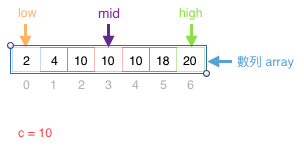
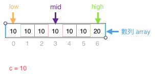

Value of eval the time complexity
如果我們想要找
一個 已排序由小到大的數列 array, 數列左最小, 數列右最大
有 n 個元素 中 指定數值 c
的 第一個出現位置 fst 和 最後一個出現位置 lst
我們可以怎麼做呢?
方法一
我們可以用 loop 整個數列 array, 然後遂個比對元素, 發現等於 c, 記下來 fst
繼續 loop 發現不等於 c, 記下來 lst
這樣的時間複雜度我們標記成
因為 n 個元素, 做 n 次比對
可能覺得一般般, 這效率好像蠻合理的
但如果我們碰到 n 為 1 million 呢?
如果我們今天是把這個演算邏輯套到比較複雜的物件搜尋上的時候呢?
假設每次比對要花上 1 秒, 找一次要花 11 天才算的出結果
等到花兒都謝了…. 😱
這時我們可以套用比較常見一點的演算法…
方法二 - 二分搜尋法 binary search
我們多設定 3 個變數, 結果 result 並預設為 -1,搜尋範圍下限 low 和 搜尋範圍上限 high
然後把 low 指向數列第一個元素, high 指向數列最後一個元素
大概像這樣

用一個 while loop, 當 low 小於等於 high
我們持續執行這個 while loop
在 loop 中我們計算 1 個變量,搜尋範圍中間 mid 指向範圍目前搜尋範圍的中間元素
如果這元素 小於 我們要找的數值
我們就把 low 調整為 mid + 1
這樣下次搜尋範圍就是
原本搜尋範圍的左半邊(沒錯! 大刀一砍, 要找的剩二分之一)
反之, 如果 中間的元素 大於 我們要找的數值
我們把 high 調整為 mid - 1
這樣下次就找右半邊就行
那如果中間值就是我們要找的數值 c
那就太好了, 結束
如果沒找到, 就丟回還是預設值 -1 的 result 表示該數值沒有在數列中.
於是~ 我們可以以下列程式碼實做這個 binary search
|
|
這樣的時間複雜度是
沒錯! 效率好超多的啊!
但這個時候
我們又很容易有一個迷思~
明明 c = 10, 又是已排序數列
所以往左遂個直接比對就可以求得第一個 c 了啊
這就是這篇文章的重點了
如果我們能習慣以時間複雜度去評估問題的話
讓我們試試
這裡我們二分法求得 mid = c 的 case =>
往左迴圈的方式遂個比對 mid - 1 是否等於 c =>
然後根據時間複雜度計算原則~ 取最大的~ 得到 =>
為什麼!!!??? 😫
我們仔細思考一下~ 當最差的情形發生
例如數列是這樣

然後數列又不只上面這麼 7 個元素而是幾萬個元素時
真的就會是趨近 的效率
所以~ 在 coding 時真的要不斷的用時間複雜度的觀念去檢視自己的程式片斷
才能避免落入陷阱 😂